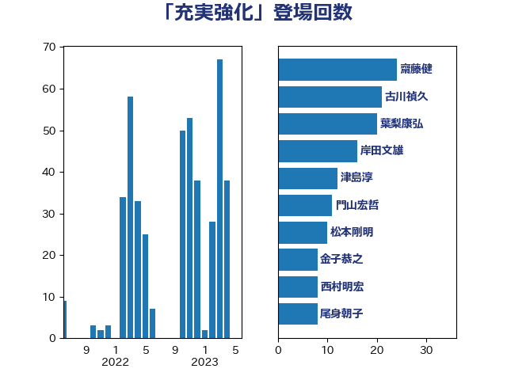

単語「充実強化」

| 齋藤健 | 自由民主党 | 24 回 |
| 古川禎久 | 自由民主党 | 21 回 |
| 葉梨康弘 | 自由民主党 | 20 回 |
| 岸田文雄 | 自由民主党 | 16 回 |
| 津島淳 | 自由民主党 | 12 回 |
| 門山宏哲 | 自由民主党 | 11 回 |
| 松本剛明 | 自由民主党 | 10 回 |
| 金子恭之 | 自由民主党 | 8 回 |
| 西村明宏 | 自由民主党 | 8 回 |
| 尾身朝子 | 自由民主党 | 8 回 |
| 加藤勝信 | 自由民主党 | 8 回 |
| 河野太郎 | 自由民主党 | 6 回 |
| 小里泰弘 | 自由民主党 | 6 回 |
| 柘植芳文 | 自由民主党 | 5 回 |
| 松野博一 | 自由民主党 | 5 回 |
| 山口壯 | 自由民主党 | 5 回 |
| 安江伸夫 | 公明党 | 5 回 |
| 野田聖子 | 自由民主党 | 4 回 |
| 道下大樹 | 立憲民主党 | 4 回 |
| 田畑裕明 | 自由民主党 | 4 回 |
| 浜田靖一 | 自由民主党 | 4 回 |
| 柴田巧 | 日本維新の会 | 4 回 |
| 柳ヶ瀬裕文 | 日本維新の会 | 4 回 |
| 斉藤鉄夫 | 公明党 | 4 回 |
| 川合孝典 | 国民民主党 | 4 回 |
| 佐々木さやか | 公明党 | 4 回 |
| 中西祐介 | 自由民主党 | 4 回 |
| こやり隆史 | 自由民主党 | 4 回 |
| 高野光二郎 | 自由民主党 | 3 回 |
| 谷公一 | 自由民主党 | 3 回 |
| 西岡秀子 | 国民民主党 | 3 回 |
| 藤井比早之 | 自由民主党 | 3 回 |
| 若宮健嗣 | 自由民主党 | 3 回 |
| 永岡桂子 | 自由民主党 | 3 回 |
| 林芳正 | 自由民主党 | 3 回 |
| 木原稔 | 自由民主党 | 3 回 |
| 日下正喜 | 公明党 | 3 回 |
| 岡田直樹 | 自由民主党 | 3 回 |
| 宮崎政久 | 自由民主党 | 3 回 |
| 阿部司 | 日本維新の会 | 2 回 |
| 長谷川英晴 | 自由民主党 | 2 回 |
| 野中厚 | 自由民主党 | 2 回 |
| 進藤金日子 | 自由民主党 | 2 回 |
| 笠井亮 | 日本共産党 | 2 回 |
| 礒崎哲史 | 国民民主党 | 2 回 |
| 磯崎仁彦 | 自由民主党 | 2 回 |
| 田村まみ | 国民民主党 | 2 回 |
| 田中昌史 | 自由民主党 | 2 回 |
| 新藤義孝 | 自由民主党 | 2 回 |
| 後藤茂之 | 自由民主党 | 2 回 |
| 寺田稔 | 自由民主党 | 2 回 |
| 大西健介 | 立憲民主党 | 2 回 |
| 大塚耕平 | 国民民主党 | 2 回 |
| 大口善徳 | 公明党 | 2 回 |
| 國重徹 | 公明党 | 2 回 |
| 伊藤孝江 | 公明党 | 2 回 |
| 中野英幸 | 自由民主党 | 2 回 |
| 中司宏 | 日本維新の会 | 2 回 |
| 鬼木誠 | 立憲民主党 | 1 回 |
| 高鳥修一 | 自由民主党 | 1 回 |
| 高橋はるみ | 自由民主党 | 1 回 |
| 青木愛 | 立憲民主党 | 1 回 |
| 階猛 | 立憲民主党 | 1 回 |
| 金城泰邦 | 公明党 | 1 回 |
| 野村哲郎 | 自由民主党 | 1 回 |
| 赤池誠章 | 自由民主党 | 1 回 |
| 西銘恒三郎 | 自由民主党 | 1 回 |
| 西野太亮 | 自由民主党 | 1 回 |
| 西村康稔 | 自由民主党 | 1 回 |
| 藤井一博 | 自由民主党 | 1 回 |
| 落合貴之 | 立憲民主党 | 1 回 |
| 菅家一郎 | 自由民主党 | 1 回 |
| 若松謙維 | 公明党 | 1 回 |
| 舩後靖彦 | れいわ新選組 | 1 回 |
| 舞立昇治 | 自由民主党 | 1 回 |
| 竹詰仁 | 国民民主党 | 1 回 |
| 福島伸享 | 無所属 | 1 回 |
| 福島みずほ | 社会民主党 | 1 回 |
| 石川博崇 | 公明党 | 1 回 |
| 石井正弘 | 自由民主党 | 1 回 |
| 矢倉克夫 | 公明党 | 1 回 |
| 田中健 | 国民民主党 | 1 回 |
| 熊田裕通 | 自由民主党 | 1 回 |
| 源馬謙太郎 | 立憲民主党 | 1 回 |
| 渡辺周 | 立憲民主党 | 1 回 |
| 清水真人 | 自由民主党 | 1 回 |
| 浅川義治 | 日本維新の会 | 1 回 |
| 江藤拓 | 自由民主党 | 1 回 |
| 江島潔 | 自由民主党 | 1 回 |
| 横山信一 | 公明党 | 1 回 |
| 森屋隆 | 立憲民主党 | 1 回 |
| 根本幸典 | 自由民主党 | 1 回 |
| 枝野幸男 | 立憲民主党 | 1 回 |
| 松野明美 | 日本維新の会 | 1 回 |
| 松本尚 | 自由民主党 | 1 回 |
| 本村伸子 | 日本共産党 | 1 回 |
| 新妻秀規 | 公明党 | 1 回 |
| 庄子賢一 | 公明党 | 1 回 |
| 岸真紀子 | 立憲民主党 | 1 回 |
| 岩田和親 | 自由民主党 | 1 回 |
| 山本博司 | 公明党 | 1 回 |
| 山本佐知子 | 自由民主党 | 1 回 |
| 山口那津男 | 公明党 | 1 回 |
| 小熊慎司 | 立憲民主党 | 1 回 |
| 小宮山泰子 | 立憲民主党 | 1 回 |
| 小倉將信 | 自由民主党 | 1 回 |
| 大野泰正 | 自由民主党 | 1 回 |
| 大家敏志 | 自由民主党 | 1 回 |
| 大串博志 | 立憲民主党 | 1 回 |
| 塩崎彰久 | 自由民主党 | 1 回 |
| 土屋品子 | 自由民主党 | 1 回 |
| 吉田久美子 | 公明党 | 1 回 |
| 北側一雄 | 公明党 | 1 回 |
| 加田裕之 | 自由民主党 | 1 回 |
| 前原誠司 | 国民民主党 | 1 回 |
| 佐藤啓 | 自由民主党 | 1 回 |
| 伊東良孝 | 自由民主党 | 1 回 |
| 伊佐進一 | 公明党 | 1 回 |
| 中谷元 | 自由民主党 | 1 回 |
| おおつき紅葉 | 立憲民主党 | 1 回 |